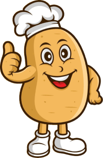

Baked Jacket Potatoes
Proper jackets, piping hot, piled high.
A British classic served how you like it with all your favourite toppings.
Choose from favourites like beans & cheese, spicy chilli, a cracking chicken curry and more. Or pick from one of our delicious weekly specials.

Get yours
Thursday, 2pm–8pm.
Sunday, 1pm–8pm.
Norman's Bay Camping and Caravanning Club.
Have your say
"The jacket potato stall is unreal, I thought surely it's just a jacket potato, but you should see the amount of toppings on this bad boy, cheeeeese for days. Truly an awesome lunch ran by lovely people, 10/10"
A happy customer from our Eastbourne Borough Market stall